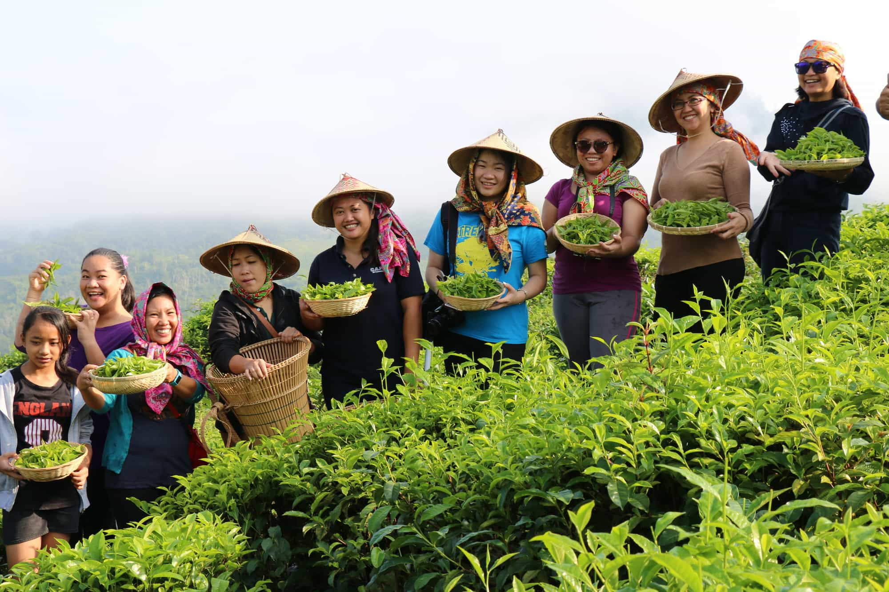
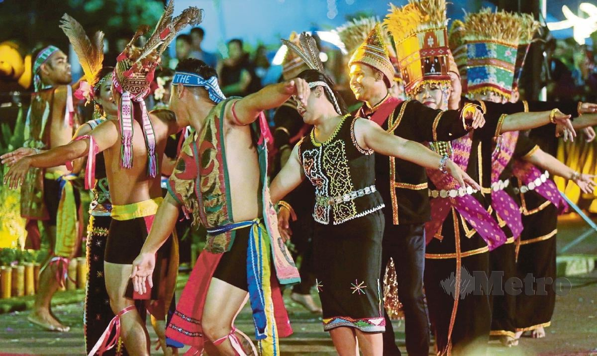
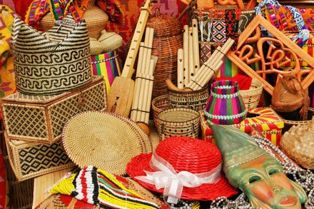

CULTURE & HERITAGE OF PEKAN KUNDASANG

AGRICULTURAL TRADITIONS
The Dusun people of Pekan Kundasang maintain their heritage through traditional farming practices, particularly cultivating vegetables, rice, and tea, which are central to their culture and economy.

FESTIVALS & BELIEFS
The Kaamatan Festival, a celebration of harvest, is a key cultural event featuring rituals, music, dance, and traditional attire. Mount Kinabalu is revered as a sacred site, reflecting the community's spiritual connection to nature.

CRAFTSMANSHIP & MARKETS
Local Dusun craftsmanship, including weaving and beadwork, showcases their artistry, while Pekan Kundasang's markets highlight indigenous produce and culture, blending tradition with modern tourism.